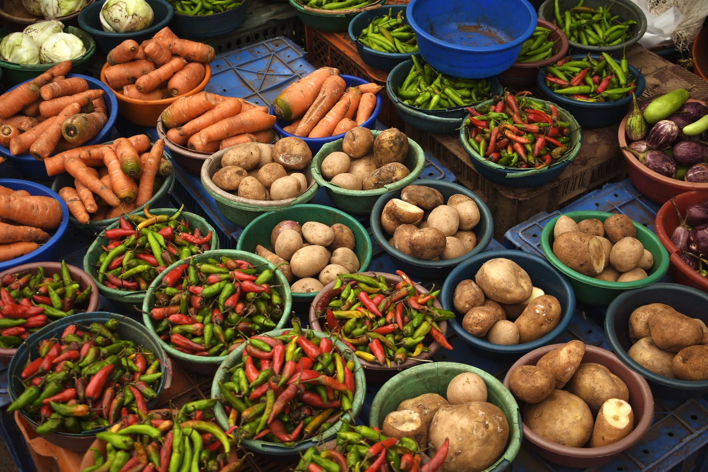
Bangladeshi food and crops, sourced to your specification.
76 food and crop lines, from Sylhet tea and aromatic rice to Rajshahi mango and packaged foods, with the same QC and compliance as our seafood.
In short: Bangladesh exports aromatic rice, tea, spices, potatoes, fresh vegetables, seasonal fruit such as mango and lychee, frozen paratha and snacks, and a wide range of packaged foods. Fresh produce needs a DAE phytosanitary certificate; processed food buyers usually require HACCP, BRCGS or FSSC 22000, plus Halal for Muslim markets.
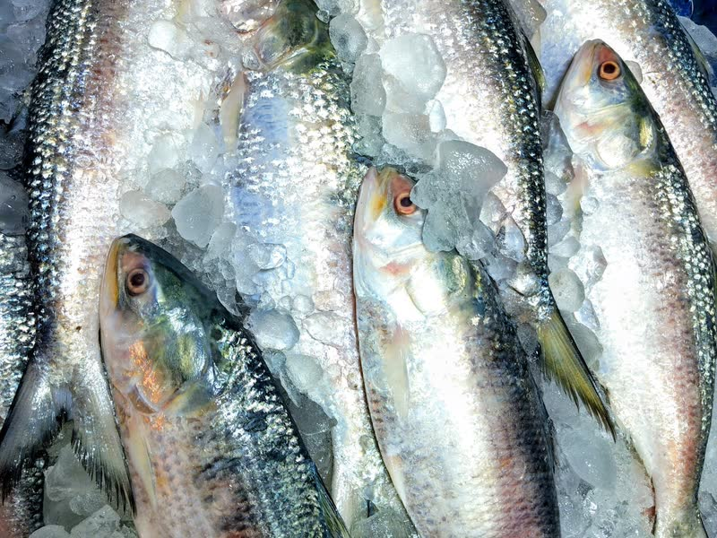
Seafood & fishShrimp, prawn, hilsa, pomfret, crab, eel, freshwater and dried fish64 products →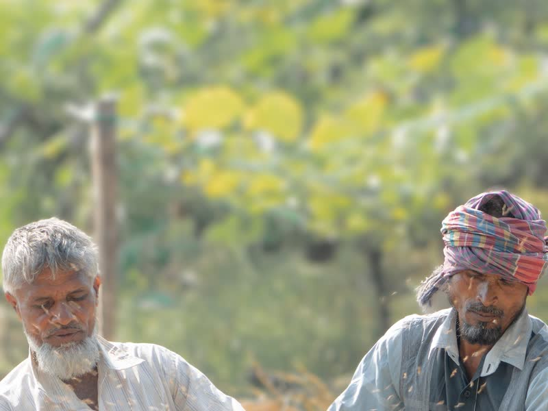
Rice & grainsAromatic rice, puffed and flattened rice, semai7 products →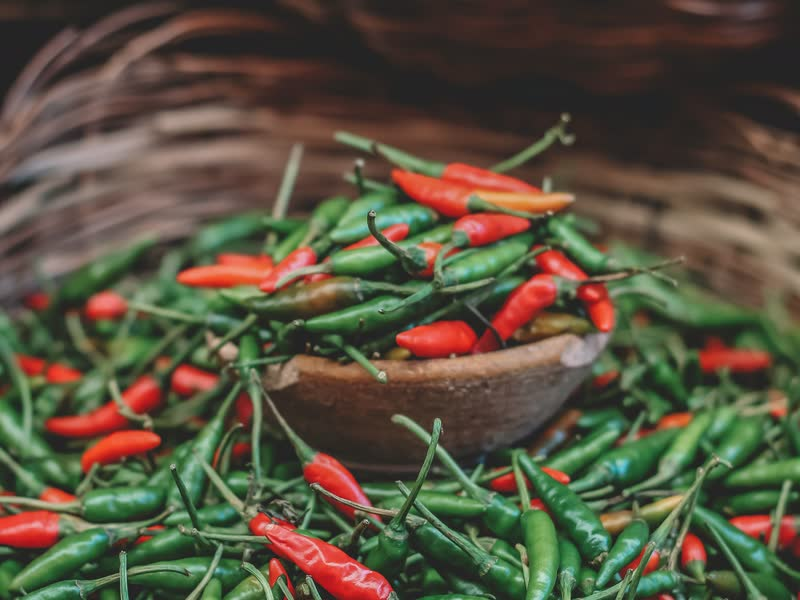
Spices & teaTurmeric, chilli, coriander, nigella, Sylhet tea8 products →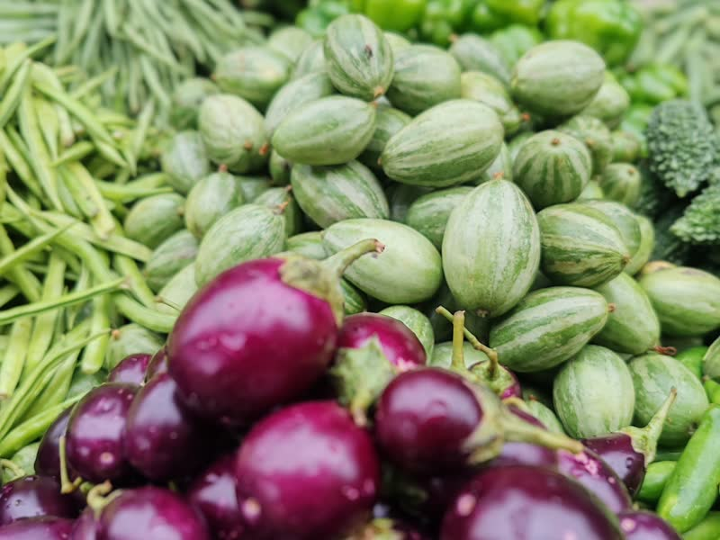
Fresh vegetablesPotato, gourds, beans, okra, leafy greens23 products →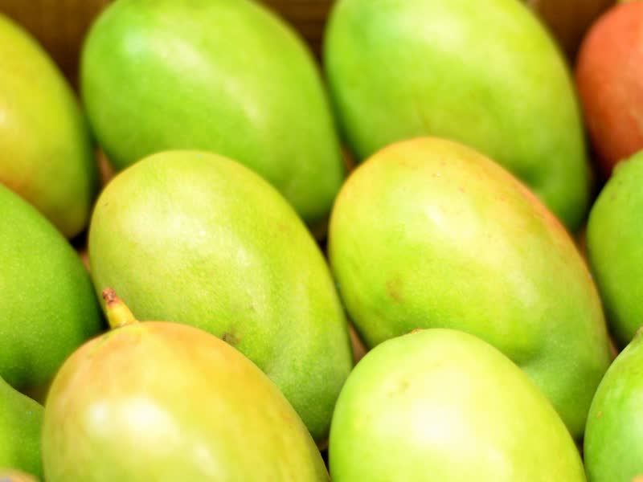
Fresh fruitsMango, jackfruit, pineapple, lychee, seasonal fruit15 products →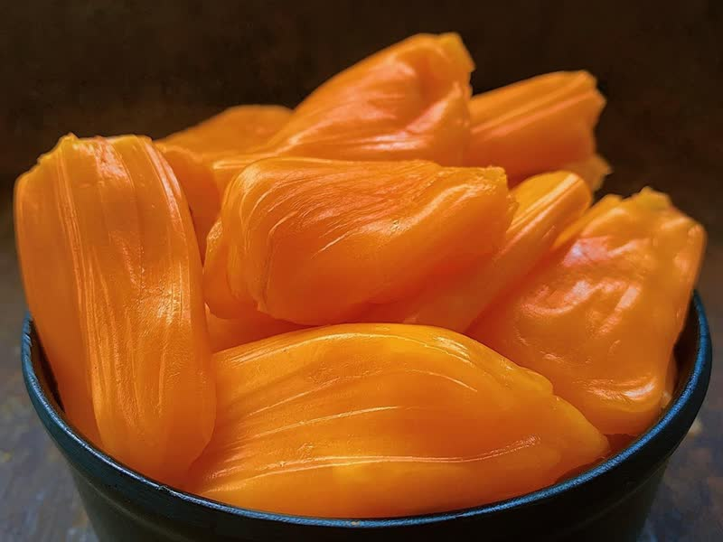
Frozen & ready-to-cookIQF vegetables, jackfruit, paratha, snacks, meals6 products →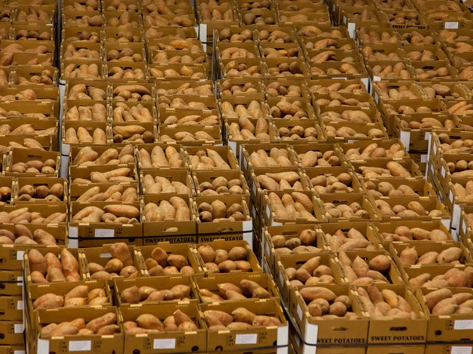
Processed & packagedBiscuits, noodles, juices, pulp, pickles, oils13 products → Sugar & sweetenersDate-palm and cane jaggery, molasses, honey4 products →From Bangladeshi fields
Graded at source, packed to your specification.
Rice, vegetables and fruit from the farms and wholesale markets our suppliers buy from.
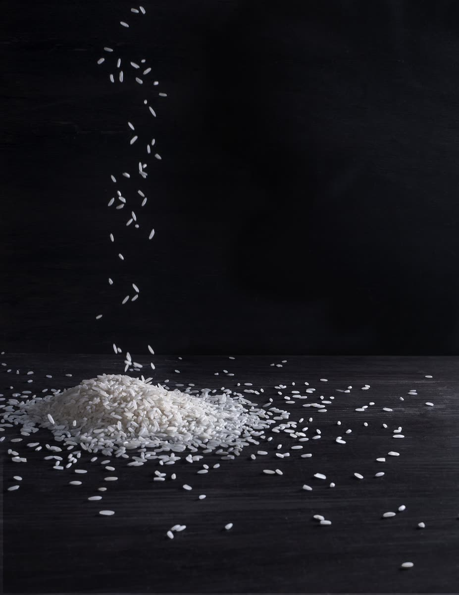
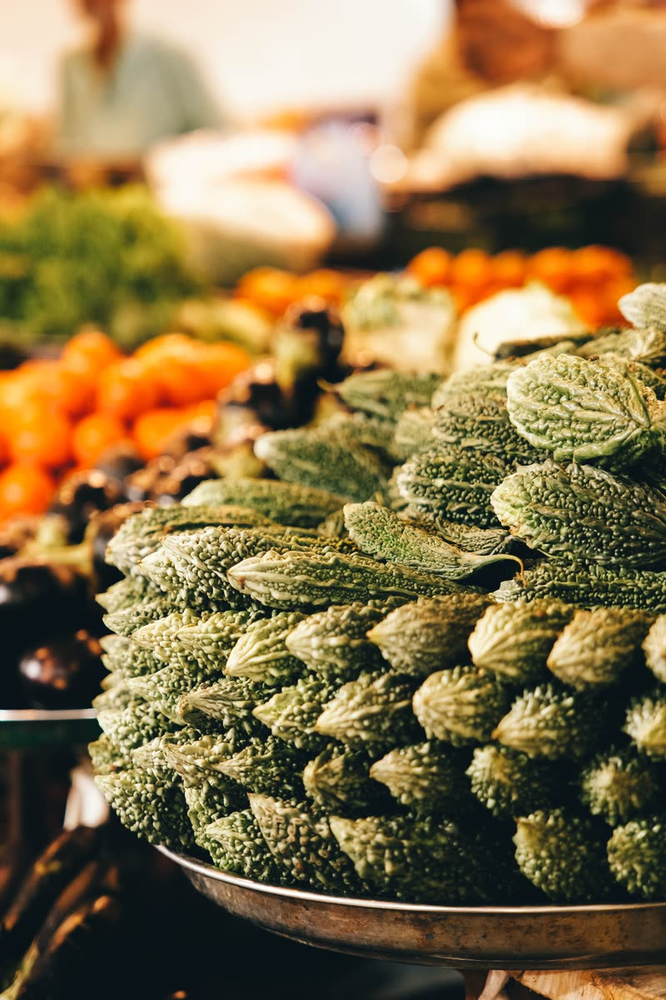
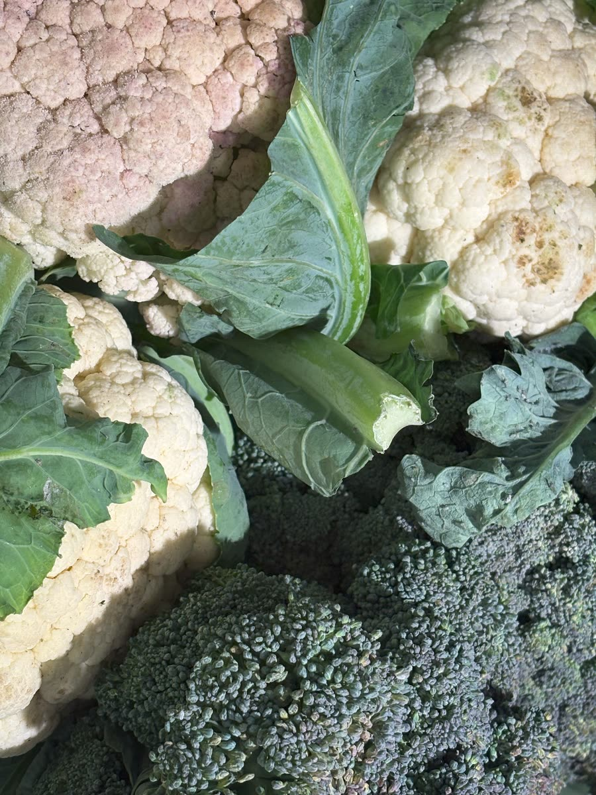
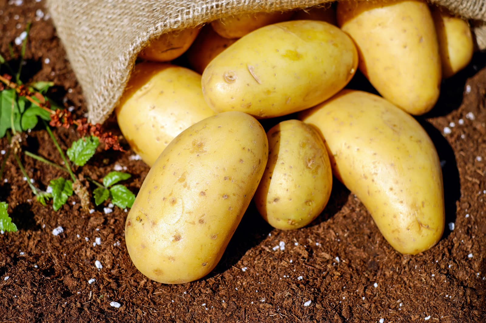
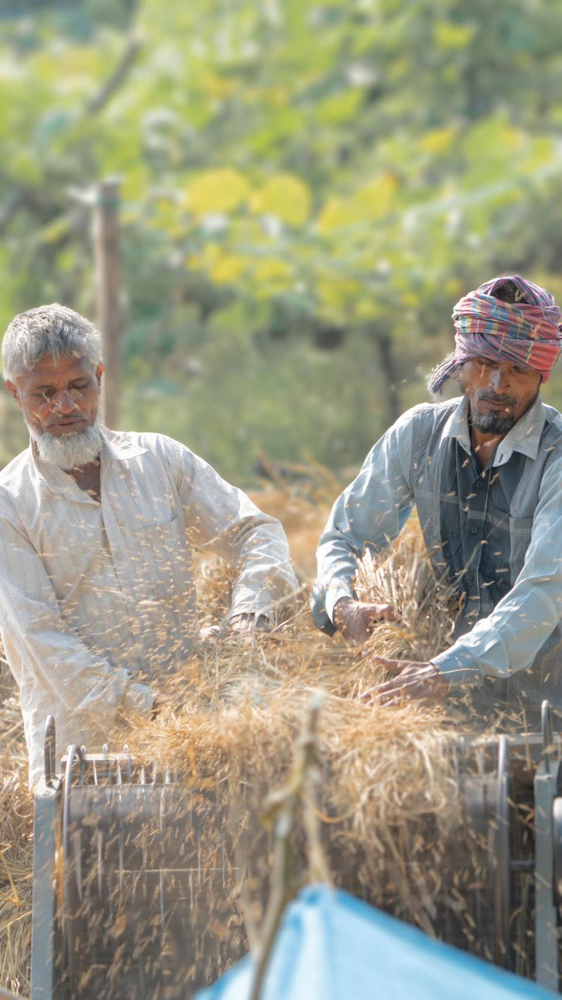
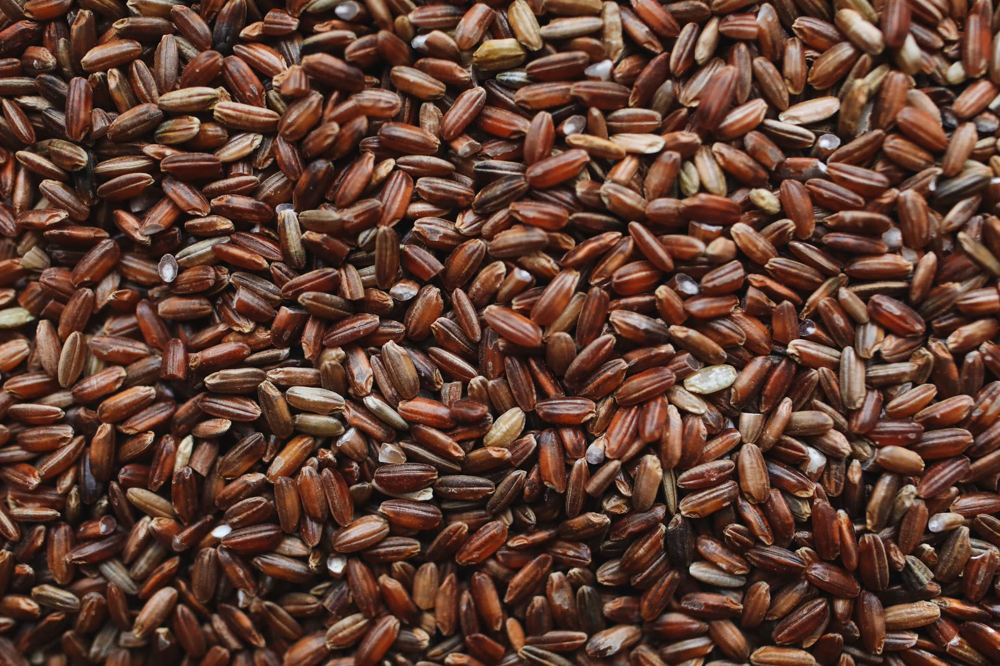
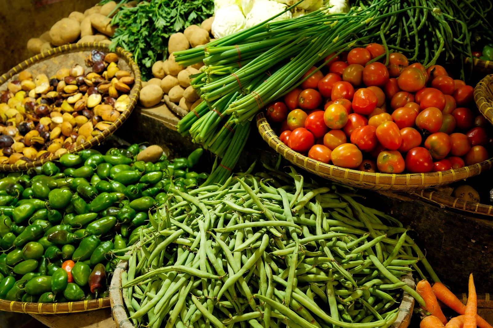
Harvest calendar
Book at the right time, at the right price.
Prices are lowest and quality highest at peak harvest. We tell you when to book, and hold stock in cold storage for year-round lines.
| Jan | Feb | Mar | Apr | May | Jun | Jul | Aug | Sep | Oct | Nov | Dec | |
|---|---|---|---|---|---|---|---|---|---|---|---|---|
| Black tiger shrimp | ||||||||||||
| Hilsa | ||||||||||||
| Aromatic rice | ||||||||||||
| Potato | ||||||||||||
| Winter vegetables | ||||||||||||
| Summer gourds | ||||||||||||
| Mango | ||||||||||||
| Lychee | ||||||||||||
| Jackfruit | ||||||||||||
| Pineapple | ||||||||||||
| Tea | ||||||||||||
| Turmeric | ||||||||||||
| Date-palm jaggery |
Peak season Available Off season or limited
Indicative calendar. Weather, fishing bans and export policy can shift timing each year.
Where it grows
Sourcing regions
| Sector | Main regions |
|---|---|
| Shrimp & prawn | Khulna, Satkhira, Bagerhat, Cox's Bazar |
| Marine fish | Chattogram, Cox's Bazar, Barguna, Patuakhali |
| Mango | Rajshahi, Chapainawabganj, Naogaon, Satkhira |
| Lychee | Dinajpur, Rajshahi, Pabna (Ishwardi) |
| Jackfruit & pineapple | Gazipur, Tangail (Madhupur), Moulvibazar |
| Potato | Munshiganj, Bogura, Rangpur, Joypurhat |
| Vegetables | Jashore, Bogura, Narsingdi, Cumilla |
| Aromatic rice | Dinajpur, Naogaon, Sherpur, Netrokona |
| Tea | Moulvibazar, Habiganj, Sylhet, Chattogram, Panchagarh |
| Turmeric & chilli | Bogura, Chattogram Hill Tracts, river char lands |
| Date-palm jaggery | Jashore, Jhenaidah |
| Honey | Sundarbans; mustard fields of Sirajganj and Tangail |
| Processed food | Dhaka, Gazipur, Narayanganj, Chattogram, Habiganj |
Food-specific QC
What we check on food
- Pesticide residues tested against your market's maximum residue limits.
- Phytosanitary certificate from the DAE Plant Protection Wing for every fresh consignment.
- Aflatoxin, illegal dyes and heavy metals tested in spices, rice and dried products.
- Moisture, grade and foreign matter checked for rice, spices and tea.
- Labels and allergens checked against your market's rules before printing.
- Factory certification (HACCP, BRCGS, FSSC 22000, Halal) verified for processed food.
FAQ
Food sourcing questions
Can GFG source food products as well as seafood?
Yes. We source 76 food and crop lines from Bangladesh, including aromatic rice, spices, tea, fresh vegetables and fruit, frozen foods and packaged foods, with the same QC gates and compliance checks as seafood.
When is Bangladeshi mango available for export?
From May to August. Himsagar and Langra peak in June, Amrapali and Fazli in July.
How is fresh produce shipped from Bangladesh?
Mostly by air from Dhaka for leafy greens, gourds and fruit, and by reefer container for potato, pumpkin, frozen food and packaged goods.
Food & crops
Need rice, produce, spices or packaged food?
Tell us the product, specification, volume and destination. You get a price offer within 24 hours.